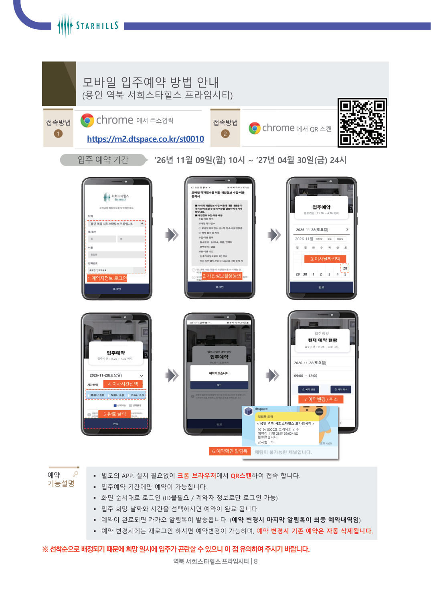
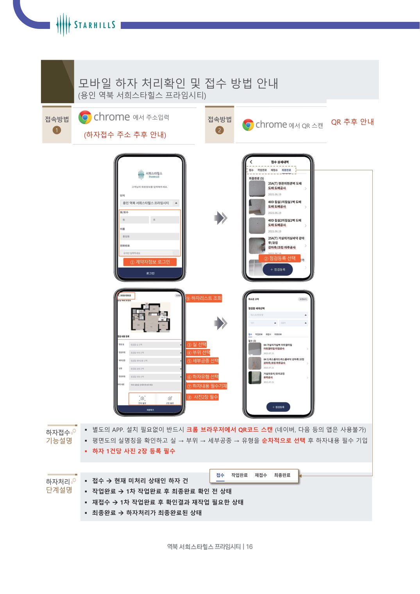

[추가 안내] 11. 28.(토)·11. 29.(일) 입주 세대
11. 28.(토)과 11. 29.(일)은 은행이 영업을 하지 않습니다. 이 날 입주하시는 세대는 잔금완납영수증을 11. 27.(금)에 발급받으시기 바랍니다.
역북서희스타힐스 프라임시티
입주를 진심으로 축하드립니다.
귀댁에 건강과 행복이 충만하시길 진심으로 기원합니다.
저희 역북지역주택조합 (역북서희스타힐스 프라임시티)은 그동안 여러분의 협조와 성원으로 차질없이 공사가 진행되어 입주가 2026. 11. 28.(토)부터 시작됩니다.
새로운 생활의 시작을 앞두고 계신 고객님의 편의와 원활한 입주를 돕기 위한 제반사항을 안내드리오니 본 안내문을 잘 확인하시어 입주 준비에 차질 없으시기 바랍니다.
역북지역주택조합과 (주)서희건설은 앞으로도 고객님의 만족스러운 생활을 위하여 최선의 노력을 다하겠습니다.
역북지역주택조합 / ㈜서희건설 일동 올림
※ 도로명 주소 : 경기 용인시 처인구 성산로 180
① 입주일정
조합원 입주일정 안내
| 구분 | 일정 | 비 고 |
|---|---|---|
| 입주지정기간 | 2026. 11. 28.(토) ~ 2027. 01. 26.(화) [60일간] | 입주증 발급 및 키 불출 같은 날 희망 시 오후 3시까지 방문 必 |
| 입주증 발급기간 | 2026. 11. 28.(토) ~ |
일반분양자 입주일정 안내
| 구분 | 일정 | 비 고 |
|---|---|---|
| 입주지정기간(1차) (조기입주 희망시) | 2026. 11. 28.(토) ~ 2027. 01. 26.(화) [60일간] | 입주증 발급 및 키 불출 같은 날 희망 시 오후 3시까지 방문 必 |
| 입주증 발급기간 | 2026.11.28.(토) ~ | |
| 입주지정기간(2차) (모집공고 기준) | 2027. 03. 02.(화) ~ 2027. 04. 30.(금) [60일간] | 입주증 발급 및 키 불출 같은 날 희망 시 오후 3시까지 방문 必 |
| 입주증 발급기간 | 2027. 03. 02.(화) ~ |
입주예약신청 : 2026. 11. 09.(월) 부터 모바일로만 신청가능 (방문신청불가)
☞ (p8) 입주예약 신청안내문을 참조바랍니다.
- * 휴일 중 입주를 희망하시는 세대는 반드시 평일에 입주증 수령 및 열쇠 인수 등의 입주절차를 완료하시기 바랍니다.
- * 잔금을 완납하여도 입주지정기간 이전에는 입주하실 수 없으니 이점 양지하시기 바랍니다.
- * 입주증 발급, 열쇠 수령 및 시설물 인수인계 후 개별적 인테리어 공사 가능합니다.
② 입주관련 전화번호
▶ 조합원 및 조기입주자(일반분양) - 2026. 11. 28.(토) ~ 2027. 01. 26.(화) [60일간]
| 구 분 · 문의처 | 전화번호 · 비 고 |
|---|---|
| 입주예정일 예약접수 관리사무소 | ☎ 031-3344-1588 Fax 031-3344-1599 2026. 11. 09.(월)부터 문의가능 09:00~17:00 (점심시간 12:00~13:00) ※ 모바일 예약만 가능 |
| 입주증 발급 및 입주절차 안내 입주지원센터 | ☎ 070-4911-7139 2026. 11. 28.(토)부터 문의가능 10:00~16:00 (점심시간 12:00~13:00) ※ 토.일요일, 공휴일 발급불가 |
| 열쇠불출 안내 입주지원센터 | ☎ 070-4276-6127 2026. 11. 28.(토)부터 문의가능 10:00~16:00 (점심시간 12:00~13:00) |
| 관리비예치금 문의 관리사무소 | ☎ 031-3344-1588 Fax 031-3344-1599 2026. 11. 28.(토)부터 문의가능 10:00~17:00 (점심시간 12:00~13:00) |
| A/S 접수신청 A/S접수처 | ☎ 070-5029-3805 ☎ 070-5029-3814 ☎ 070-5029-3850 2026. 11. 28.(토)부터 문의가능 10:00~16:00 (점심시간 12:00~13:00) ※ 일요일·공휴일 휴무 |
| 유상옵션 관련 (유)애플이앤씨 | ☎ 1800-8691 09:00~18:00 (점심시간 12:00~13:00) ※ 토.일요일·공휴일 휴무 |
▶ 일반분양자 - 2027. 03. 02.(화) ~ 2027. 04. 30.(금) [60일간]
| 구 분 · 문의처 | 전화번호 · 비 고 |
|---|---|
| 입주예정일 예약접수 관리사무소 | ☎ 031-3344-1588 Fax 031-3344-1599 2026. 11. 09.(월)부터 문의가능 09:00~17:00 (점심시간 12:00~13:00) ※ 모바일 예약만 가능 |
| 입주증 발급 및 입주절차 안내 입주지원센터 | ☎ 070-4911-7139 2027. 03. 02.(화)부터 문의가능 10:00~16:00 (점심시간 12:00~13:00) ※ 토.일요일, 공휴일 발급불가 |
| 열쇠불출 안내 입주지원센터 | ☎ 070-4276-6127 2027. 03. 02.(화)부터 문의가능 10:00~16:00 (점심시간 12:00~13:00) |
| 관리비예치금 문의 관리사무소 | ☎ 031-3344-1588 Fax 031-3344-1599 2026. 11. 28.(토)부터 문의가능 10:00~17:00 (점심시간 12:00~13:00) |
| A/S 접수신청 A/S접수처 | ☎ 070-5029-3805 ☎ 070-5029-3814 ☎ 070-5029-3850 2027. 03. 02.(화)부터 문의가능 10:00~16:00 (점심시간 12:00~13:00) ※ 일요일·공휴일 휴무 |
| 유상옵션 관련 (유)애플이앤씨 | ☎ 1800-8691 09:00~18:00 (점심시간 12:00~13:00) ※ 토.일요일·공휴일 휴무 |
③ 입주절차
☞ 대출세대(중도금대출→상환 또는 잔금대출전환) : ①→②→③→④→⑤→⑥→⑦
☞ 비대출세대 : ①→②→④→⑤→⑥→⑦
② 분양대금 등 완납
- ▷ 각종 잔금납부
- ▷ 중도금 이자후불금
→ 금액 별도 문의 - ▷ 대출 보증수수료
- ▷ 유상옵션잔금 납부
입주증 수령 전까지 납부
(각 지정계좌로 납부)
③ 중도금 대출 상환 또는 전환 (해당 세대)
- ▷ 중도금대출 원금 상환 또는 잔금대출로 전환
- ▷ 최초 입주개시일 발생되는 중도금대출이자
→ 계약자 부담 (은행에 직접 납부)
- ▷ 국민 은행 해당 지점
- [조합원]
- - 101동, 103동 → 용인종합금융센터지점
- - 104동, 107동 → 용인대로지점
- - 106동 → 동백지점
- - 102동, 105동, 108동 → 기흥구청지점
- [일반분양자]
- - 전 세대 → 용인종합금융센터지점
④ 입주증 발급
- ▷ 분양대금 등 완납여부 확인
- ▷ 입주증 수령
- ▷ 잔금납부영수증
- - 조합 : 분양금, 유상옵션
- - 일반 : 분양금, 발코니확장, 유상옵션
- ▷ 중도금대출 이자후불금 및 보증수수료 납부영수증(해당세대만)
- ▷ 중도금대출 상환영수증(해당세대만)
- ▷ 계약자 신분증
- ▷ 가족 방문 시
- - 가족관계증명서
- - 대리인신분증
- ▷ 제3자 대리인 방문 시
- - 위임장(계약자 인감날인)
- - 인감증명서(계약자본인발급)
- - 대리인신분증
⑤ 관리비예치금 납부
- ▷ 관리비예치금 납부
→ 관리사무소 계좌에 입금
- ▷ 관리비예치금 납부영수증 (납부확인용) → 관리사무소 발급
관리비예치금 미납세대는 열쇠불출이 불가합니다.
⑥ 열쇠수령
- ▷ 열쇠 수령 및 시설물 인수인계
- ▷ 입주증
- ▷ 관리비예치금 영수증 (납부완료 시 교부)
- ▷ 계약자 신분증
⑦ 입 주
- ▷ 예약된 입주예정(이사일자)일에 입주
① 입주예정일 예약
입주시 이사중복에 따른 불편을 피하기 위해 엘리베이터 이용시간을 지정하여 사용할 예정입니다.
- 1. 입주지정기간 : [조기입주(1차)] 2026. 11. 28.(토) ~ 2027. 01. 26.(화) [60일간]
[공고입주(2차)] 2027. 03. 02.(화) ~ 2027. 04. 30.(금) [60일간] - 2. 입주일시 예약가능일 : 2026. 11. 09.(월) 10:00부터 (이사예약프로그램 신청, 방문예약불가)
※ 2026. 11. 09.(월) 오전10시부터 입주예약 사이트 접속 가능합니다. - 3. 예약문의 : 관리사무소 ☎ 031-3344-1588
(2026. 11. 09.(월)부터 전화문의가능_오전 09:00~오후 17:00 / 점심시간 12:00~13:00 제외) - 4. 엘리베이터 사용시간
| 입주지정시간 | 비 고 |
|---|---|
| 1회차 (09:00~12:00) | 세대별 3시간 (E/V사용) |
| 2회차 (12:00~15:00) | |
| 3회차 (15:00~18:00) |
- ▣ 입주지정기간 전에는 입주가 불가하오니 유념하시기 바랍니다.
- ▣ 순조로운 입주 진행을 위해 희망 이사일을 각 회차별로 예약하신 후 이사하기 바랍니다.
- ▣ 입주 전 당사에서는 세대별 마무리 확인을 하오니 입주희망일 최소 10일 이전에 이사 일정 재확인을 하시기 바랍니다.
- ▣ 단지 내 혼잡과 엘리베이터 사용, 각종 시설물 (가스, 수도, 엘리베이터, 기타 시설물)의 점검 및 안전상의 문제로 1일 엘리베이터 사용가능 세대수가 라인별로 제한되며, 입주지정기간 초기에는 많은 혼잡이 예상되오니 충분한 시간을 두고 입주 절차를 진행하여 주시기 바랍니다.
- ▣ 입주초기와 공휴일, 길일(손 없는 날)등 특정일은 상당한 혼잡이 예상되오니 가급적 평일에 입주하시면 편리하게 입주 하실 수 있습니다.
- ▣ 타 세대에 불편이 초래되지 않도록 반드시 지정된 일자 및 시간에 이사를 완료하여 주시기 바랍니다.
- ▣ 단지배치상 사다리차 이용이 불가하여 엘리베이터를 이용하셔야 합니다. 따라서, 사전에 엘리베이터 제약되는 사항이 있는지 이사업체에 필히 확인하신 후 진행하시기 바랍니다. 자세한 사항은 관리사무소와 협의하시기 바랍니다.
- ▣ 개인사정으로 입주지정(예약)일을 지키지 못할 시에는 관리사무소로 사전에 연락하시어 협의하여 주시기 바랍니다.
- ▣ 토/일요일, 공휴일 중에 입주를 희망하시는 세대는 필히 평일(은행영업일)에 중도금 대출상환처리 및 각종 잔금, 관리비 예치금을 입금하시고 해당 영수증을 지참해 입주절차를 완료하시기 바랍니다. (관리사무소 및 입주지원센터에서는 현금 수납이 절대 불가함)
- ▣ 이삿짐은 입주증을 발급받으시고, 열쇠를 수령하신 후 반입이 가능합니다.
- ▣ 각종 대금 완납 전이라도 입주시간 지정예약 가능하나, 미리 예약하시더라도 각종 대금 완납 후 입주증을 발급받으셔야만 이사를 하실 수 있습니다.
모바일 입주예약 방법 안내
(용인 역북 서희스타힐스 프라임시티)
입주예약기간 ‘26년 11월 09일(월) 10시 ~ ‘27년 04월 30일(금) 24시
접속방법 ① chrome 에서 주소입력 https://m2.dtspace.co.kr/st0010
접속방법 ② chrome 에서 QR 스캔
- ▪ 별도의 APP. 설치 필요없이 크롬 브라우저에서 QR스캔하여 접속 합니다.
- ▪ 입주예약 기간에만 예약이 가능합니다.
- ▪ 화면 순서대로 로그인(ID불필요 / 계약자 정보로만 로그인 가능)
- ▪ 입주 희망 날짜와 시간을 선택하시면 예약이 완료 됩니다.
- ▪ 예약이 완료되면 카카오 알림톡이 발송됩니다. (예약 변경시 마지막 알림톡이 최종 예약내역임)
- ▪ 예약 변경시에는 재로그인 하시면 예약변경이 가능하며, 예약 변경시 기존 예약은 자동삭제됩니다.
※ 선착순으로 배정되기 때문에 희망 일시에 입주가 곤란할 수 있으니 이 점 유의하여 주시기 바랍니다.

② 각종 대금 납부안내
조합분양
| 구분 | 은행명 · 계좌번호 · 예금주 |
|---|---|
| 분양금 잔금 | 농협 은행 355-0078-6386-13 ㈜무궁화신탁 |
| 유상옵션 잔금 (해당세대만) | 우리 은행 1005-603-161169 (유)애플이엔씨 |
| 중도금 이자 후불금 (해당세대만) | 농협 은행 355-0078-6386-13 ㈜무궁화신탁 |
| 대출 보증수수료 (해당세대만) | 농협 은행 355-0078-6386-13 ㈜무궁화신탁 |
일반분양
| 구분 | 은행명 · 계좌번호 · 예금주 |
|---|---|
| 분양금 잔금 | 국민 은행 649701-01-316056 ㈜무궁화신탁 |
| 발코니확장공사 잔금 | 국민 은행 649701-01-316056 ㈜무궁화신탁 |
| 유상옵션 잔금 (해당세대만) | 우리 은행 1005-603-161169 (유)애플이엔씨 |
| 중도금 이자 후불금 (해당세대만) | 국민 은행 649701-01-316056 ㈜무궁화신탁 |
| 대출 보증수수료 (해당세대만) | 국민 은행 649701-01-316056 ㈜무궁화신탁 |
| 납부기한 | [조기입주(1차)] 2026. 11. 28.(토) ~ 2027. 01. 26.(화)까지 [공고입주(2차)] 2027. 03. 02.(화) ~ 2027. 04. 30.(금)까지 |
|---|---|
| 납부방법 및 유의사항 | ※ 입주지원센터에서는 현금 수납을 받지 않으니 반드시 위의 계좌번호로 입금하여 주시기 바랍니다. (입금자란에 동ㆍ호수를 정확하게 기재하여 주시기 바랍니다.) ※ 입금예시 : 101동 202호 계약자 홍길동 ⇒ 101-202 또는 1010202홍길동 |
| 연체안내 | 입주지정기간 종료일 [조기입주(1차)] 익일(2027. 01. 27.), [공고입주(2차)] 익일(2027. 05. 01.)부터 계약서에 약정된 연체요율로 계산된 연체료가 부과됩니다. (단, 납부약정일이 지난 미납금액에 대해서는 입주지정기간 중에도 연체료가 부과됩니다.) |
▶ 연체료율 안내
| 구 분 | 기 준 | 연체료율 |
|---|---|---|
| 조합원 | 미납금액 기준/연체일수로 산정 | 15% |
| 일반분양자 | 1일이상 ~ 30일이하 | 14.82% |
| 31일이상 ~ 90일이하 | 17.82% | |
| 91일이상 ~ 180일이하 | 19.82% | |
| 180일 초과 | 21.82% |
- ▣ 중도금 대출은 반드시 상환을 하시거나, 잔금대출(담보대출)로 대환하신 후 기존 대출은행에서 발행한 상환영수증 사본을 제출하셔야 합니다. 또한, 중도금대출은 반드시 해당은행의 대출계좌로 상환하여야하며, 상환 시 당사 지정계좌에 착오 입금할 경우 발생하는 문제(이자발생, 입주지연 등)에 대하여 당사가 책임지지 않사오니, 입금 시 유의하시기 바랍니다.
- ▣ 소유권이전등기 시점은 조합의 소유권 보존등기 완료 후 가능하므로 잔금납부일자 보다 지연될 수도 있습니다.
- ▣ 분양권 전매는 잔금완납 후에는 불가하므로, 의사가 있는 경우에는 잔금납부 전에 하시기 바랍니다. (잔금완납 이후는 어떠한 경우라도 관련 법령에 의거(미등기전매) 명의변경이 불가함을 알려드립니다.)
- ▣ 분양대금 중 잔금을 소액만 남기시고 납부하신 경우 그 시점부터 취득으로 간주되어 불이익(가산세 부과 등)을 당할 수 있으니 이 점 유의하시기 바랍니다.
③ 중도금 대출 상환 방법(중도금 대출세대에 한함)
중도금 대출을 받으신 세대는 입주증 발급 전 대출금을 전액 상환하시거나, 담보대출로 대환하셔야 입주가 가능합니다. 입주지정개시일(조합원, 일반분양자 상이함)부터 발생되는 이자는 계약자께서 직접 중도금 대출은행으로 납부하셔야 합니다.
▶ 대출 은행안내
| 구분 | 은행 및 해당 지점 | 연락처 · 비 고 |
|---|---|---|
| 조합분양 중도금대출 | 101동, 103동 (국민은행 용인종합금융센터지점) | ☎ 031-336-0236 김지정 팀장 |
| 104동, 107동 (국민은행 용인대로지점) | ☎ 031-8020-0979 차현희 팀장 | |
| 106동 (국민은행 동백지점) | ☎ 031-644-0044 정윤선 팀장 | |
| 102동, 105동, 108동 (국민은행 기흥구청지점) | ☎ 031-644-3656 송정미 팀장 | |
| 일반분양 중도금대출 | 국민은행 용인종합금융센터지점 | ☎ 031-336-0236 김지정 팀장 |
*동별 국민은행 해당지점이 다르니 유의하시기 바랍니다.
- ▣ 입주증 발급 시 중도금대출 상환 또는 대환세대는 “대출금 상환영수증”을 입주지원센터에 제출하여 주시기 바랍니다.
- ▣ 중도금 대출세대는 대출은행에 방문하시어 중도금 대출금액을 해당은행의 대출계좌로 상환 하셔야 하며, 분양대금 등의 납입계좌와 혼동하여 착오 입금되지 않도록 유의하시기 바랍니다. 차후 발생하는 문제(이자발생, 입주지연 등)에 대해서 당사에서는 책임지지 않사오니 유의하시기 바랍니다.
- ▣ 중도금 대출을 받으신 세대 중 부동산(아파트) 담보대출로 전환을 원하시는 세대는 입주증 발급전에 해당은행에 담보대출전환관련 서류를 접수하시고, 입주증 발급 신청전에 담보대출금이 실행되어, 대출금 전액이 상환되어야 합니다.
- ▣ 잔금(담보)대출은 당사와 무관하며, 금리 등 대출조건에 따라 입주자님께서 은행별 대출조건을 비교하신 후 직접 은행에 신청하셔야만 합니다.
④ 입주증 발급
- 1. 발급기간 : 2026. 11. 28.(토)부터
- 2. 발급장소 : 입주지원센터 ☎ 070-4911-7139
(평일 10:00~16:00, 점심시간 12:00~13:00, 토·일요일 및 공휴일 휴무) - 3. 발급요건 : 분양대금 잔금, 발코니 확장 잔금(해당세대만), 유상옵션 잔금(해당세대만), 중도금 이자후불금, 중도금대출 세대의 경우 전액 상환
- 4. 구비서류
| 비 고 | 구 비 서 류 |
|---|---|
| 공 통 |
|
| 추가서류 대리인 방문 시 |
|
※ 입주관련 모든 납부에 관하여 계약자 본인의 착오에 의한 과오납 및 오입금에 대한 환불처리는 환불신청 시점으로부터 1개월 정도 소요되며, 이로 인한 입주증 발급 및 열쇠 수령 지연에 의한 이사문제 발생에 대한 책임은 입주지원센터에 요구 할 수 없음을 알려드립니다.(초과입금 금액에 대한 이자는 지급되지 않음)
※ 환불신청 시 필요서류 :
[계약자기준] 신분증사본 1부, 통장사본 1부, 인감증명서 1부, 초과납입한 입금증, 환불요청서(입주지원센터 비치)
[방문작성시] 계약자 인감도장 지참
[대리인방문시] 위임장(입주지원센터 비치)
[추가 안내] 11. 28.(토)·11. 29.(일) 입주 세대는 은행 휴무로 잔금완납영수증을 11. 27.(금)에 발급받으시기 바랍니다.
- ▣ 토,일요일 및 공휴일에 입주하실 세대는 평일(은행영업일)에 입주증을 교부받으시기 바랍니다.
- ▣ 입주증을 이사 당일 발급받으면 혼잡할 수 있으니, 되도록 수일 전에 여유있게 발급받으시기 바랍니다.
- ▣ 금융기관에서 1순위 근저당설정을 하기 전에 다른 선순위 저당권이 설정되면 담보대출이 불가능하여, 부득이 대출금을 상환하여야 하오니 유념하시기 바랍니다.
- ▣ 가압류 등 소유권이전에 제한이 있는 세대는 입주증 발급이 불가하며 입주 전 가압류 등 제한사항이 해소된 경우에만 발급 가능하며, 발급 시 가압류취소 결정문 또는 가압류취소신청 접수증명원을 제출하셔야 하오니 필히 지참하시기 바랍니다.
⑤ 관리비예치금 납부 및 관리계약 체결
- 1. 대상 : 전 세대
- 2. 납부시기 : 열쇠 수령전 까지
- 3. 납부장소 : 아파트 관리사무소 지정계좌로 입금
- 4. 문의 : ☎ 031-3344-1588
- 5. 계좌번호
| 은행명 · 예금주 · 계좌번호 |
|---|
| 농협 은행 현대아미스(주) 역북 서희스타힐스 프라임시티아파트 355-0098-1866-13 |
- 6. 평형별 관리비예치금액 (단위 : 원)
| 타 입 | 공급면적(㎡) | 예치금 |
|---|---|---|
| 59A | 82.1685㎡ | 250,000 |
| 59B | 82.6751㎡ | 250,000 |
| 74A | 101.1988㎡ | 300,000 |
| 74B | 101.8814㎡ | 300,000 |
| 84A | 114.1421㎡ | 340,000 |
| 84B | 114.9255㎡ | 340,000 |
| 84C | 114.4023㎡ | 340,000 |
- ▣ 관리비예치금은 관리사무소 계좌로 납부하셔야 합니다.
☞ 분양대금 납부계좌와 관리비예치금 납부계좌가 다르므로 주의하시기 바랍니다. - ▣ 관리사무소에서는 절대로 현금 수납을 하지 않으니 상기 계좌로 입금하시고, 무통장입금증 또는 계좌이체내역을 지참하시기 바랍니다.
- ▣ 입금시, 반드시 동호수 또는 계약자 성명으로 입금하시기 바랍니다.
- ▣ 관리비예치금을 미납하신 세대는 입주가 불가하오니 유의하시기 바랍니다.
※ 관리비예치금이란?
공동주택관리법 시행령 제24조에 의거하여 신축아파트 최초 입주 시 아파트 관리에 소요되는 제반비용을 충당하기 위해 첫 달 관리비를 부과하기 전 징수하는 선납관리비입니다.
관리비예치금은 추후 전·출입시 관리사무소에서 미납 관리비 정산을 통해 환불하거나 신규 입주세대 간 승계처리가 되는 제도입니다.
⑥ 열쇠 수령 및 시설물 인수인계
1. 열쇠 수령
- ① 대상 : 입주증 발급 완료세대
- ② 기간 : 2026. 11. 28.(토)부터
(매일 : 10:00 ~ 16:00, 점심시간 : 12:00 ~ 13:00, 15시 30분 이후 열쇠수령 불가) - ③ 장소 : 입주지원센터 ☎ 070-4276-6127
- ④ 구비서류 : 신분증, 입주증, 관리비예치금 영수증
2. 시설물 인수인계
- ① 열쇠 수령 시 직원과 함께 세대의 시설물을 점검하시고 각종 계량기를 상호 확인하시기 바라며, 이후 사용량에 대해선 입주자의 사용량에 따라 관리비가 부과됩니다.
- ② 세대 검침 확인 시 세대별로 설치된 각종 전자·전기제품의 설치 유무를 확인하시고, 열쇠수령 후에는 세대별 시설물의 도난, 파손 등의 사유 발생 시 입주자의 책임이므로 각별히 유념하시기 바랍니다.
- ③ 입주 후 A/S 및 공사부분에 대한 불편사항은 A/S사무실로 접수하시기 바랍니다.
- ▣ 열쇠는 관리비예치금을 납부하시고 입주증을 발급 받으신 분에 한하여 불출됩니다.
- ▣ 열쇠 교부는 해당 세대에 대한 당사의 제반 관리의무 및 권한을 계약자께 최종적으로 인계하는 중요한 단계입니다. 이에 따라 개별적 커튼공사, 인테리어공사 등으로 인한 시공업자의 열쇠교부 요청은 세대내 시설물의 사용, 도난, 손괴 등의 문제 발생으로 엄격히 제한하고 있으니 상기 시공은 입주자께서 정식으로 열쇠를 인수하신 이후 의뢰하시기 바랍니다.
※ 임시 키 대여관련
- ① 잔금납부전 입주청소는 이사예약일 3일전부터 가능합니다.(세대 검침 및 확약서 작성 必 미작성시 일체불가) 또한 세대전기, 수도, 난방비 등 세대에서 개별적으로 사용하시는 관리비는 상기 절차 진행일부터 검침한 계량기 수치에 따라 부과 됩니다.
- ② 잔금납부전 인테리어 허용범위 안내드립니다. 이외 공사는 일체 불가합니다.(입주청소, 줄눈, 탄성코트) 무단시공 발견 즉시 원상복구하여야 하며, 잔금완납 시까지 세대 내 출입 불가합니다.
- ③ 본인 방문시 신분증/ 세입자,업체 등 제3자 방문시 위임장 및 계약자 신분증 사본 지참하셔야 합니다.
- ④ 키대여 후 반납은 키 불출 당일 오후 3시30분 이전 필히 반납하셔야 합니다.
(계약자 신분증, 대리인일 경우 방문자 신분증과 위임장)
⑦ A/S 접수
▶ 조합원 및 조기입주자
2026. 11. 28.(토) ~ / (일요일 및 공휴일 휴무)
▶ 일반분양자
2027. 03. 02(화) ~ / (일요일 및 공휴일 휴무)
▶ A/S 접수방법
① 모바일 접수 (P16참조) ※ 접속 주소 추후 안내
▶ A/S 전화 문의
☎ 070-5029-3805
☎ 070-5029-3814
☎ 070-5029-3850
(10:00~16:00, 점심시간 12:00~13:00, 일요일 및 공휴일 휴무)
▶ A/S (하자)담보 책임기간
“하자”란 공사상 잘못으로 인하여 균열·침하(沈下)·파손·들뜸·누수 등이 발생하여 건축물 또는 시설물의 안전상·기능상 또는 미관상의 지장을 초래할 정도의 결함을 의미하며, 내력구조부별 하자 와 시설공사별 하자로 구분할 수 있습니다.
| 기간 | 시설공사 | 세부공종 |
|---|---|---|
| 2년 | 1. 마감공사 | 가. 미장공사 | 나. 수장공사 | 다. 도장공사 | 라. 도배공사 | 마. 타일공사 바. 석공사(건물내부 공사) | 사. 옥내가구공사 | 아. 주방기구공사 | 자. 가전제품 |
| 3년 | 2. 옥외급수· 위생 관련 공사 | 가. 공동구공사 | 나. 저수조(물탱크)공사 | 다. 옥외위생(정화조) 관련 공사 라. 옥외 급수 관련 공사 |
| 3. 난방·냉방·환기, 공기조화 설비공사 | 가. 열원기기설비공사 | 나. 공기조화기기설비공사 | 다. 닥트설비공사 | 라. 배관설비공사 마. 보온공사 | 바. 자동제어설비공사 | 사. 온돌공사(세대매립배관 포함) | 아. 냉방설비공사 | |
| 4. 급·배수 및 위생설비공사 | 가. 급수설비공사 | 나. 온수공급설비공사 | 다. 배수·통기설비공사 라. 위생기구설비공사 | 마. 철 및 보온공사 | 바. 특수설비공사 | |
| 5. 가스설비공사 | 가. 가스설비공사 | 나. 가스저장시설공사 | |
| 6. 목공사 | 가. 구조체 또는 바탕재공사 | 나. 수장목공사 | |
| 7. 창호공사 | 가. 창문틀 및 문짝공사 | 나. 창호철물공사 | 다. 창호유리공사 | 라. 커튼월공사 | |
| 8. 조경공사 | 가. 식재공사 | 나. 조경시설물공사 | 다. 관수 및 배수공사 | 라. 조경포장공사 마. 조경부대시설공사 | 바. 잔디심기공사 | 사. 조경물공사 | |
| 9. 전기 및 전력 설비공사 | 가. 배관·배선공사 | 나. 피뢰침공사 | 다. 동력설비공사 | 라. 수·변전설비공사 마. 수·배전공사 | 바. 전기기기공사 | 사. 발전설비공사 | 아. 승강기설비공사 자. 인양기설비공사 | 차. 조명설비공사 | |
| 10. 신재생 에너지 설비 | 가. 태양열설비공사 | 나. 태양광설비공사 | 다. 지열설비공사 | 라. 풍력설비공사 | |
| 11. 정보통신공사 | 가. 통신·신호설비공사 | 나. TV공청설비공사 | 다. 감시제어설비공사 라. 가정자동화설비공사 | 마. 정보통신설비공사 | |
| 12. 지능형 홈네트워크 | 가. 홈네트워크망공사 | 나. 홈네트워크기기공사 | 다. 단지공용시스템공사 | |
| 13. 소방시설공사 | 가. 소화설비공사 | 나. 제연설비공사 | 다. 방재설비공사 | 라. 자동화재탐지설비공사 | |
| 14. 단열공사 | 벽체, 천장 및 바닥의 단열공사 | |
| 15. 잡공사 | 가. 옥내설비공사(우편함, 무인택배시스템 등) 나. 옥외설비공사(담장, 울타리, 안내시설물 등), 금속공사 | |
| 5년 | 16. 대지조성공사 | 가. 토공사 | 나. 석축공사 | 다. 옹벽공사(토목옹벽) | 라. 배수공사 | 마. 포장공사 |
| 17. 철근콘크리트공사 | 가. 일반철근콘크리트공사 | 나. 특수콘크리트공사 | 다. 프리캐스트콘크리트공사 라. 옹벽공사(건축옹벽) | 마. 콘크리트공사 | |
| 18. 철골공사 | 가. 일반철골공사 | 나. 철골부대공사 | 다. 경량철골공사 | |
| 19. 조적공사 | 가. 일반벽돌공사 | 나. 점토벽돌공사 | 다. 블록공사 | 라. 석공사(건물외부 공사) | |
| 20. 지붕공사 | 가. 지붕공사 | 나. 홈통 및 우수관공사 | |
| 21. 방수공사 | 가. 방수공사 |
모바일 하자 처리확인 및 접수 방법 안내
(용인 역북 서희스타힐스 프라임시티)
※ 하자접수 접속 주소 및 QR은 추후 안내드립니다.
원본 안내문 16쪽에 하자접수 주소로 적힌 https://m2.dtspace.co.kr/st0010 과 QR은 이사예약(입주예약) 주소입니다.
접속방법 ① chrome 에서 주소입력
접속방법 ② chrome 에서 QR 스캔
- ▪ 별도의 APP. 설치 필요없이 반드시 크롬 브라우저에서 QR코드 스캔(네이버, 다음 등의 앱은 사용불가)
- ▪ 평면도의 실명칭을 확인하고 실 →부위 →세부공종 →유형을 순차적으로 선택 후 하자내용 필수 기입
- ▪ 하자 1건당 사진 2장 등록 필수
- ▪ 접수 →현재 미처리 상태인 하자 건
- ▪ 작업완료 →1차 작업완료 후 최종완료 확인 전 상태
- ▪ 재접수 →1차 작업완료 후 확인결과 재작업 필요한 상태
- ▪ 최종완료 →하자처리가 최종완료된 상태

➇ 입주관련 유의사항
▶ 관리비 부과기준
1. 조합원 및 조기입주자
| 구분 | 기간 | 관리비 부과 기준 |
|---|---|---|
| 입주지정기간 | 2026. 11. 28.(토) ~ 2027. 01. 26.(화) | • 열쇠불출일 전까지: 사업주체 부담 • 열쇠불출일부터: 입주자 부담 |
| 입주지정기간 종료 후 | 2027. 01. 27.(수) 부터 | • 잔금완납 및 입주여부와 관계없이 입주자 부담 |
2. 일반분양자
| 구분 | 기간 | 관리비 부과 기준 |
|---|---|---|
| 입주지정기간 | 2027. 03. 02.(화) ~ 2027. 04. 30.(금) | • 열쇠불출일 전까지: 사업주체 부담 • 열쇠불출일부터: 입주자 부담 |
| 입주지정기간 종료 후 | 2027. 05. 01.(토) 부터 | • 잔금완납 및 입주여부와 관계없이 입주자 부담 |
(단, 세대전기, 수도, 난방비 등 세대에서 개별적으로 사용하시는 경우 검침한 계량기 수치에 따라 부과 됩니다.)
▶ 공동주택의 관리〔공동주택관리법 제35조(행위허가 기준 등)〕
공동주택의 입주자/사용자 또는 관리주체가 다음 각 호의 어느 하나에 해당하는 행위를 하려는 경우에는 허가 또는 신고와 관련된 면적, 세대수 또는 입주자 등의 동의 비율에 관하여 대통령령으로 정하는 기준 및 절차 등에 따라 시장ㆍ군수ㆍ구청장의 허가를 받거나 신고를 하여야 한다.
- ① 공동주택을 사업계획에 따른 용도외의 용도에 사용하는 행위
- ② 공동주택을 증축 · 개축 · 대수선하는 행위(「주택법」에 따른 리모델링은 제외한다.)
- ③ 공동주택을 파손 또는 훼손하거나 해당 시설의 전부 또는 일부를 철거하는 행위 (국토교통부령으로 정하는 경미한 행위는 제외한다)
- ④ 그 밖에 공동주택의 효율적 관리에 지장을 주는 행위로서 대통령령으로 정하는 행위
※ 상기사항을 위반하는 자는 공동주택관리법 제102조 의거 500만원 이하의 과태료를 부과하도록 되어 있으니 이 점 유념하시기 바랍니다.
▶ 단지 내 시설물 보호
단지 내 시설물 및 조경 수목은 우리가 보호하고 가꾸어야 할 주민들의 소중한 재산입니다.
이삿짐 운반 시 특별히 주의하시고 파손 또는 훼손 시 변상 조치하오니 유념하시기 바랍니다.
▶ 폐기물 처리 안내
종량제봉투를 사용하기 곤란한 폐가구 등은 관리사무소에 신고 후 별도의 비용을 부담해야하오니, 가급적 현재 거주지에서 처리하여 혼잡이 없도록 협조 바랍니다.
▶ 일반매매 안내
세대 일반매매는 사용승인(준공)이후 원 조합원의 명의로 반드시 최초 취등록(등기)을 마친 이후에 가능하며, 이 때 조합원 자격요건에 관계없이 제3자에게 매매 가능합니다.
① 취득세 납부 안내(일반분양자만 해당)
- · 신고납부기한 : 취득일로부터 60일이내
- · 취득일 기준
① 사용승인일(준공일) 이전 잔금 완납 시 : 사용승인일(준공일)
② 사용승인일(준공일) 이후 잔금 완납 시 : 잔금 완납일
- ▣ 납부기한이 경과하여 신고 및 납부할 경우, 가산세가 부과되오니 유의하시기 바랍니다.
- ▣ 개별 취득품목(별도계약 유상옵션품목)에 대해서도 취득세가 부과되오니 착오 없으시기 바랍니다.
- ▣ 분양대금 잔금을 선납하시거나 일부를 납부하실 경우, 납부금액에 따라 취득으로 간주될 수 있사오니 관련 기관에 문의하여 착오가 발생하지 않도록 유의하시기 바랍니다.
- ▣ 부동산거래계약(공급)신고필증은 조합사무실에서 일괄 보관하고 있습니다.
※ 취득세 관련 문의처 : 처인구청 세무과 ☎ 031-6193-5183, 5235
※ 세제 관련 안내사항은 입주자의 편의를 위하여 제작된 것으로서 관련법 개정 등으로 인한 일부 내용의 변경 및 인쇄상 오류가 있을 수 있사오니 자세한 사항은 관련 기관에 문의하시기 바랍니다.
② 소유권이전등기 안내(일반분양자만 해당)
소유권이전등기는 아파트가 준공되면 사업주체인 역북지역주택조합 명의로 ‘소유권보존등기’후 계약자 명의로 소유권을 이전해 드리는 절차입니다. 단, 대출이 있으신 세대의 경우는 금융기관의 담보제공을 위해 근저당권설정등기를 소유권이전등기와 동시에 진행하셔야 합니다.
※ 소유권이전등기 절차(일반분양자)
| 각종대금 완납 | 등기관련 서류 신청 및 수령 | 등기서류 접수 | 등기완료 |
|---|---|---|---|
| 잔금, 대출상환 | 역북지역주택조합 | 등기소 | 등기권리증발급 |
※ 등기의무 기간 (아래의 등기의무기간 경과 시 과태료 부과)
- 보존등기일 이전 잔금 완납세대 → 보존등기일로부터 60일 이내 등기
- 보존등기일 이후 잔금 완납세대 → 잔금완납일로부터 60일 이내 등기
※ 소유권이전등기 관련서류
| 분양자 신청 구비서류 | 조합 발급서류 (약 10일 소요) |
|---|---|
| · 계약자 주민등록초본 1부 · 소유권이전등기서류교부신청서 1부 |
· 조합장인감이 날인된 등기용 위임장 1부 · 보존등기필증(=권리증)사본 · 부동산거래계약신고필증 사본 · 매도용 인감증명서 1부 · 세대별 정산내역서(=잔금완납확인서) 각1부 · 등기용등록증명서 1부 |
- · 상기 발급서류는 소유권보존등기 완료 후 발급이 가능하오니 착오 없으시기 바랍니다.
- · 상기서류 외 소유권이전등기에 필요한 제반서류는 관할등기소에 문의 후 준비하시기 바랍니다.
- · 신청서류 발급에는 일주일 이상의 기간이 소요될 수 있으므로 소유권이전등기 관련 서류는 개인별 소유권이전등기 만료일 기준 15일 이전에 신청하셔야 하며, 지연 신청 시에는 해태사유로 인한 과태료 부과 등의 불이익이 있을 수 있사오니 충분한 여유 기한 내에 등기를 완료하시기 바랍니다.
※ 관련번호 안내
| 구분 | 담당 | 연락처 |
|---|---|---|
| 조합서류 발급관련 | 역북지역주택조합 | ☎ 031-335-1254 / ☎ 031-336-1254 |
| 관할 등기소 | 수원지방법원 용인등기소 | ☎ 1544-0770 / ☎ 1544-0773 |
※ 소유권이전등기 시점은 조합의 소유권 보존등기 및 등기절차에 따라 입주지정일과 달리 다소 지연될 수도 있습니다.
※ 세제 관련 안내사항은 입주자의 편의를 위하여 제작된 것으로서 관련법 개정 등으로 인한 일부 내용의 변경 및 인쇄상 오류가 있을 수 있사오니 자세한 사항은 관련 기관에 문의하시기 바랍니다.
③ 생활편의시설 이용 안내
1. 주민등록 전입신고
- • 주민등록 전입신고 : 역북동 행정복지센터 (☎ 031-6193-5933)
- • 인터넷 전입신고 www.gov.kr (검색창에서 “정부24”입력)→“전입신고” 클릭
2. 기타시설 전화번호
④ FAQ(자주 문의하시는 질문의 답변)
- 1. 잔금은 언제 납부해야 하나요?
- - 입주지정 기간 내 잔금 일체를 납부하셔야 합니다. 각종 분양대금, 중도금대출 전액상환, 중도금 이자후불금, 대출 보증수수료, 유상 옵션품목 금액(해당세대)이 모두 완납되어야 입주가 가능하며, 입주지정기간 이후 부터는 미납금액에 대해 분양계약서에 약정된 연체요율로 계산된 연체료가 부과됩니다.
※ 조합원, 일반분양자 입주지정기간 상이함. - 2. 입주예정일 예약은 무엇인가요?
- - 이사기간 중 혼잡을 예방하기 위하여 엘리베이터 이용시간을 선착순으로 접수 받습니다. 입주예정일 예약은 입주자간의 약속이므로 반드시 지켜주시기 바랍니다.
- 3. 입주증 발급 전에 세대 방문이 가능한가요?
- - 원칙적으로 입주증 발급 후에 세대 방문이 가능하나 이사예약일 3일전 입주청소(줄눈, 탄성코트)를 위해 제한적으로 임시 키 발급은 가능합니다.
- 4. 관리비예치금은 무엇인가요?
- - 관리비예치금은 본 건물의 공용부분에 대한 관리비 1회분을 추정 선납하는 것이며, 입주자께서 관리비를 납부하시기 전에 관리사무소에서 집행할 추정관리비를 예치하는 것입니다.
- 5. 관리비는 언제부터 부담하나요?
- - 입주지정기간 내 입주하시는 세대는 열쇠 수령일부터 관리비가 부과됩니다.
단, 열쇠 수령 전 입주청소 등으로 전기, 수도, 난방을 사용한 경우에는 해당 사용일부터 발생한 사용료를 부담하셔야 합니다. 입주지정기간 내 입주하지 않은 세대는 입주지정기간 종료일 다음 날부터 실제 입주 여부와 관계없이 관리비를 부담하셔야 합니다. - 6. 이사당일에 전세금을 받아서 이사 오는 경우는 어떻게 하나요?
- - 이사희망일을 사전예약하시고, 이사진행 전 입주증을 받으시면 당일 입주가 가능합니다. 그러나 토요일, 일요일 및 공휴일은 은행 휴무일이므로 대출 상환 및 입금 확인이 불가하고, 입주지원센터에서는 현금 수납을 하지 않으니 입주 일정을 평일로 조정하시기 바랍니다.
- 7. 대출·중도금대출을 받은 사람은 잔금만 내면 입주가 되는 건가요?
- - 중도금 대출금을 상환이나 담보대출로 전환하시거나 둘 중 한 가지를 결정하셔야 합니다. 상환하실 경우에는 입주증 발급 전까지 상환 절차를 마치셔야 하며, 담보대출로 전환하실 경우는 입주증 발급 전에 부동산 담보대출로 전환하여 중도금대출금이 상환되어야 합니다.
- 8. 잔금대출을 신청하여 대출금으로 잔금 처리 하는 경우에는 신청만 하면 입주가 되나요?
- - 잔금대출이 실행되어 잔금 계좌로 입금된 것이 확인된 경우에 한하여 입주증 발급이 가능합니다. 이 경우에도 부동산 담보대출 전환 절차를 입주증 발급 전에 마치셔야 합니다.
- 9. 입주증 수령을 대리인이 할 수 있나요?
- - 원칙적으로 계약자 본인에게만 입주증 발급이 됩니다. 다만, 가족의 경우에는 가족관계를 입증하는 서류 그리고 오신 가족분의 신분증을 지참하고 오시면 됩니다. 가족이 아닌 경우 또는 가족임을 증명하기 어려운 경우에는 계약자의 인감이 날인된 위임장과 계약자의 인감증명서를 별도로 준비하셔야 합니다.